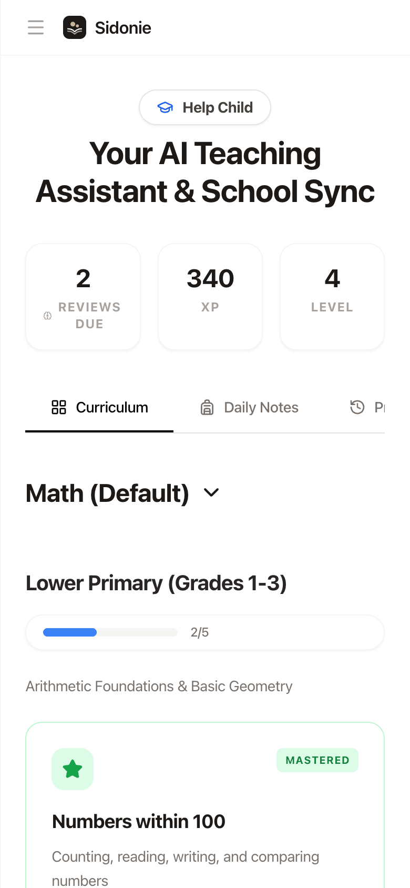
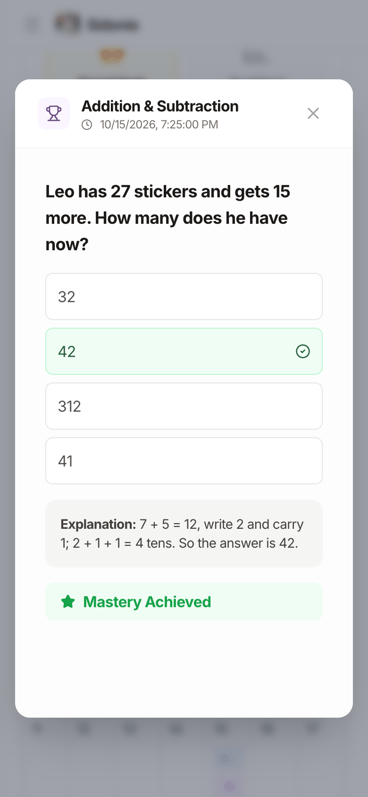

Open-source · local-first
Built for my family first.
An AI learning companion that helps a child learn a little every day — and helps the grown-ups read, annotate and review research papers.
Help ChildPaper studyYour own API key
An AI learning companion that helps a child learn a little every day — and helps the grown-ups read, annotate and review research papers.

